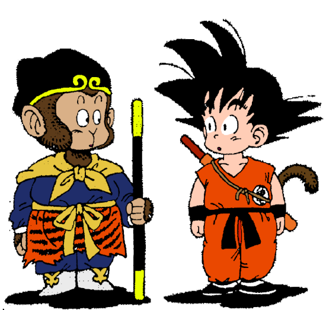

Akira Toriyama
Dragon Ball (ドラゴンボール, Dragonball) é uma mídia internacionalmente popular entre crianças e jovens adultos. Ela consiste primariamente de um manga, criado por Akira Toriyama em 1984, quatro séries de animes, dezenove filmes animados, um filme live-action americano, jogos colecionáveis de carta e outros produtos, um grande número de videogames (ainda sendo produzidos).
A história e os personagens de Dragon Ball foram parcialmente inspirados pela história chinesa Jornada ao Oeste, embora seja divergida rapidamente. O enredo segue as aventuras do personagem principal Son Goku (baseado no Rei dos Macacos da lenda, Sun Wukong), desde sua infância até virar adulto. A história inclui elementos de ação de comédia, embora a série se torne mais orientada à ação depois de um tempo.
